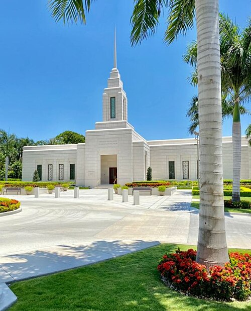

Port Au Prince Haiti

About the Temple
The Port Au Prince Temple is the seventh temple built in Haiti and the first for Ivory Coast (Haiti).
Dedicated 1 September 2019: Haiti LDS Church History
Visiting Information
- Location: Petion-Ville, Haiti
- Hours: Check Ordinance Schedule
- Phone: +509 22 62 5810
- Housing: Available